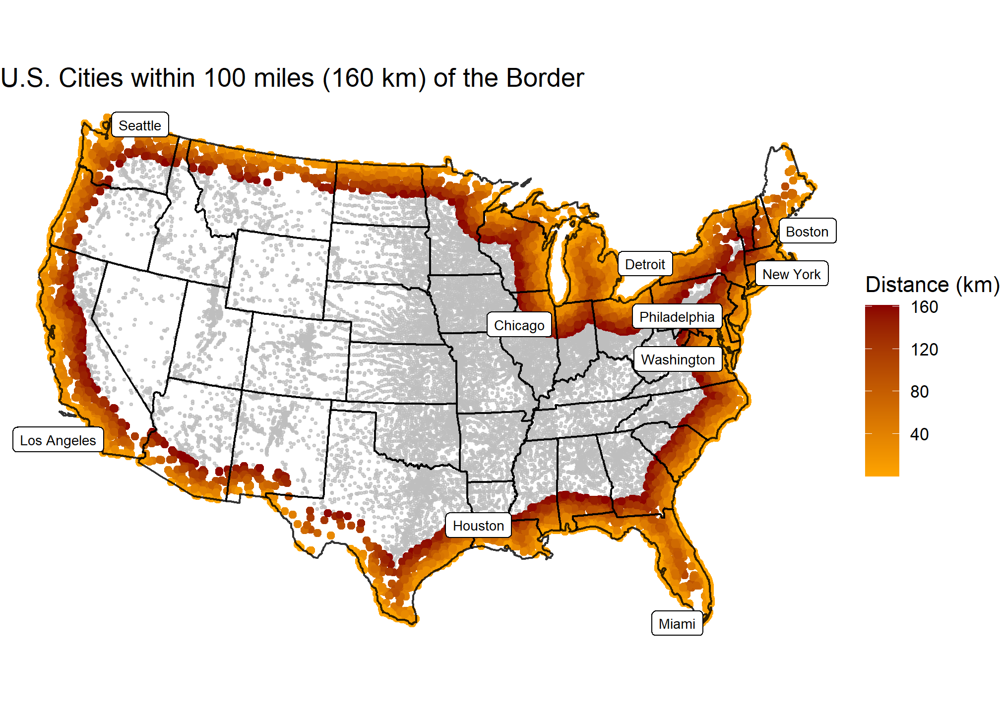

#Data Manipulation
library(tidyverse)
library(sf)
library(units)
library(flextable)
#Data Loading
library(USAboundaries)
library(rnaturalearth)
# Visualization
library(gghighlight)
library(ggrepel)
library(knitr)Lab 2: Distances and Projections
Populations Across Space

In this lab I explored the properties of sf, sfc, and sfg features & objects; how they are stored; and issues related to distance calculation and coordinate transformation.
I continue to build on my data wrangling and visualization skills; as well as document preparation via Quarto and GitHub.
Libraries
Background
In this lab, 4 main skills are covered:
- Ingesting / building
sfobjects from R packages and CSVs. (Q1) - Manipulating geometries and coordinate systems (Q2)
- Calculating distances (Q2)
- Building maps using ggplot (Q3)
Question 1:
For this lab three (3) datasets are needed.
- Spatial boundaries of continental USA states (1.1)
- Boundaries of Canada, Mexico and the United States (1.2)
- All USA cites (1.3)
1.1 Define a Projection
For this lab I want to calculate distances between features, therefore I need a projection that preserves distance at the scale of CONUS. For this, I will use the North America Equidistant Conic:
eqdc <- '+proj=eqdc +lat_0=40 +lon_0=-96 +lat_1=20 +lat_2=60 +x_0=0 +y_0=0 +datum=NAD83 +units=m +no_defs'This PROJ.4 string defines an Equidistant Conic projection with the following parameters:
+proj=eqdc → Equidistant Conic projection
+lat_0=40 → Latitude of the projection’s center (40°N)
+lon_0=-96 → Central meridian (96°W)
+lat_1=20 → First standard parallel (20°N)
+lat_2=60 → Second standard parallel (60°N)
+x_0=0 → False easting (0 meters)
+y_0=0 → False northing (0 meters)
+datum=NAD83 → Uses the North American Datum 1983 (NAD83)
+units=m → Units are in meters
+no_defs → No additional default parameters from PROJ’s database
This projection is commonly used for mapping large areas with an east-west extent, especially in North America, as it balances distortion well between the two standard parallels.
1.2 - Get USA state boundaries
In R, USA boundaries are stored in the USAboundaries package.
- USA state boundaries can be accessed with
USAboundaries::us_states(resolution = "low"). Given the precision needed for this analysis, low resolution is sufficient. - Make sure only the states in the continental United States (CONUS) are selected
- Make sure the data is in a projected coordinate system suitable for distance measurements at the national scale (
eqdc).
state_boundary <- us_states(resolution = 'low') %>%
filter(!state_abbr %in% c('PR', 'HI', 'AK')) %>%
st_transform(eqdc)st_crs(state_boundary)
ggplot(data = state_boundary) +
geom_sf() +
theme_void()1.3 - Get country boundaries for Mexico, the United States of America, and Canada
In R, country boundaries are stored in the rnaturalearth package. - World boundaries can be accessed with rnaturalearth::countries110. - Make sure the data is in simple features (sf) format - Make sure to only have the countries wanted - Make sure the data is in a projected coordinate system suitable for distance measurements at the national scale (eqdc).
na_boundaries <- rnaturalearth::countries110 %>%
filter(ADMIN %in% c('United States of America', 'Canada', 'Mexico')) %>%
st_as_sf() %>%
st_transform(eqdc)st_crs(na_boundaries)
ggplot(data = na_boundaries) +
geom_sf() +
theme_void()1.4 - Get city locations from the CSV file
The process of finding, downloading and accessing data is the first step of every analysis.
Data was accessed at this (free) site and downloaded as a dataset into the data directory of this project.
Once downloaded, read it into my working session using and explored the dataset until comfortable with the information it contained.
The data has everything but it is not spatial. Convert the data.frame to a spatial object using st_as_sf and prescribing the coordinate variables and CRS.
Finally, remove cities in states not wanted and make sure the data is in a projected coordinate system suitable for distance measurements at the national scale.
Congratulations! here are three real-world, large datasets ready for analysis.
us_cities <- read_csv('data/uscities.csv') %>%
st_as_sf(coords = c('lng', 'lat'), crs = 4326) %>%
st_transform(eqdc) %>%
filter(!state_id %in% c('PR', 'HI', 'AK'))st_crs(us_cities)
ggplot(data = us_cities) +
geom_sf() +
theme_void()Question 2:
Here I focus on calculating the distance of each USA city to (1) the national border (2) the nearest state border (3) the Mexican border and (4) the Canadian border. The existing spatial geometries are manipulated to do this.
2.1 - Distance to USA Border (coastline or national) (km)
state_boundary_u <- state_boundary %>%
st_union() %>%
st_cast(to = 'MULTILINESTRING')
us_cities_distance <- us_cities %>%
mutate(distance_usa = st_distance(us_cities, state_boundary_u)) %>%
mutate(distance_usa = units::set_units(distance_usa, km)) %>%
select(-c('city_ascii', 'source', 'military', 'incorporated', 'timezone', 'ranking', 'zips', 'id'))
slice_max(us_cities_distance, n = 5, order_by = distance_usa) %>%
st_drop_geometry() %>%
select(city, state_name, distance_usa) %>%
flextable() %>%
set_caption("5 Cities Furthest from a Coastal or International Border") %>%
theme_zebra()city | state_name | distance_usa |
|---|---|---|
Ludell | Kansas | 1,012.508 [km] |
Dresden | Kansas | 1,012.398 [km] |
Herndon | Kansas | 1,007.763 [km] |
Hill City | Kansas | 1,005.140 [km] |
Atwood | Kansas | 1,004.734 [km] |
2.2 - Distance to States (km)
For 2.2 we are interested in calculating the distance of each city to the nearest state boundary. To do this we need all states to act as single unit. Convert the USA state boundaries to a MULTILINESTRING geometry in which the state boundaries are preserved (not resolved). In addition to storing this distance data as part of the cities data.frame, produce a table (flextable) documenting the five cities farthest from a state border. Include only the city name, state, and distance.
state_boundary_c <- state_boundary %>%
st_combine() %>%
st_cast(to = 'MULTILINESTRING')
us_cities_distance <- us_cities_distance %>%
mutate(distance_state = st_distance(us_cities_distance, state_boundary_c)) %>%
mutate(distance_state = units::set_units(distance_state, km))
slice_max(us_cities_distance, n = 5, order_by = distance_state) %>%
st_drop_geometry() %>%
select(city, state_name, distance_state) %>%
flextable() %>%
set_caption("5 Cities Furthest from a State Boundary") %>%
theme_zebra()city | state_name | distance_state |
|---|---|---|
Briggs | Texas | 309.4150 [km] |
Lampasas | Texas | 308.9216 [km] |
Kempner | Texas | 302.5868 [km] |
Bertram | Texas | 302.5776 [km] |
Harker Heights | Texas | 298.8138 [km] |
2.3 - Distance to Mexico (km)
For 2.3 we are interested in calculating the distance of each city to the Mexican border. To do this we need to isolate Mexico from the country objects. In addition to storing this data as part of the cities data.frame, produce a table (flextable) documenting the five cities farthest from the Mexico border. Include only the city name, state, and distance.
na_boundaries_mex <- na_boundaries %>%
filter(SOV_A3 == 'MEX') %>%
st_cast(to = 'MULTILINESTRING')
us_cities_distance <- us_cities_distance %>%
mutate(distance_mex = st_distance(us_cities_distance, na_boundaries_mex)) %>%
mutate(distance_mex = units::set_units(distance_mex, km))
slice_max(us_cities_distance, n = 5, order_by = distance_mex) %>%
st_drop_geometry() %>%
select(city, state_name, distance_mex) %>%
flextable() %>%
set_caption("5 Cities Furthest from the Mexico Border") %>%
theme_zebra()city | state_name | distance_mex |
|---|---|---|
Grand Isle | Maine | 3,282.825 [km] |
Caribou | Maine | 3,250.330 [km] |
Presque Isle | Maine | 3,234.570 [km] |
Oakfield | Maine | 3,175.577 [km] |
Island Falls | Maine | 3,162.285 [km] |
2.4 - Distance to Canada (km)
For 2.4 we are interested in calculating the distance of each city to the Canadian border. To do this we need to isolate Canada from the country objects. In addition to storing this data as part of the cities data.frame, produce a table (flextable) documenting the five cities farthest from a state border. Include only the city name, state, and distance.
na_boundaries_can <- na_boundaries %>%
filter(SOV_A3 == 'CAN') %>%
st_cast(to = 'MULTILINESTRING')
us_cities_distance <- us_cities_distance %>%
mutate(distance_can = st_distance(us_cities_distance, na_boundaries_can)) %>%
mutate(distance_can = units::set_units(distance_can, km))
slice_max(us_cities_distance, n = 5, order_by = distance_can) %>%
st_drop_geometry() %>%
select(city, state_name, distance_can) %>%
flextable() %>%
set_caption("5 Cities Furthest from the Canada Border") %>%
theme_zebra()city | state_name | distance_can |
|---|---|---|
Guadalupe Guerra | Texas | 2,206.455 [km] |
Sandoval | Texas | 2,205.641 [km] |
Fronton | Texas | 2,204.794 [km] |
Fronton Ranchettes | Texas | 2,202.118 [km] |
Evergreen | Texas | 2,202.020 [km] |
Question 3:
In this section I visualize the distance data calculated above. I use ggplot to make maps, ggrepl to label significant features, and gghighlight to emphasize important criteria.
3.1 Data
Show the 3 continents, CONUS outline, state boundaries, and 10 largest USA cities (by population) on a single map.
us_cities_size <- us_cities_distance %>%
slice_max(n = 10, order_by = population)
ggplot() +
geom_sf(data = na_boundaries, linewidth = 0.75, color = 'black') +
geom_sf(data = state_boundary) +
geom_sf(data = us_cities_size, aes(color = population)) +
scale_color_viridis_c(option = 'turbo') +
geom_label_repel(data = us_cities_size,
aes(x = st_coordinates(geometry)[,1],
y = st_coordinates(geometry)[,2],
label = city),
size = 2) +
theme_void() +
theme(legend.position = 'none') +
labs(title = "10 Largest U.S. Cities by Population")
3.2 City Distance from the Border
Create a map that colors USA cities by their distance from the national border. In addition, re-draw and label the 5 cities that are farthest from the border.
us_cities_distance <- us_cities_distance %>%
mutate(distance_usa = as.numeric(distance_usa),
distance_state = as.numeric(distance_state),
distance_mex = as.numeric(distance_mex),
distance_can = as.numeric(distance_can))
us_cities_far <- us_cities_distance %>%
slice_max(n = 5, order_by = distance_usa) %>%
mutate(label = paste(city, state_id, sep = ','))
ggplot() +
geom_sf(data = state_boundary) +
geom_sf(data = us_cities_distance, aes(color = distance_usa), alpha = 0.7, size = 1) +
scale_color_viridis_c(option = 'rocket', name = 'Distance (km)') +
theme_void() +
labs(title = 'U.S. Cities and Distances from the Nearest Border') +
geom_sf(data = us_cities_far, color = 'black') +
geom_label_repel(data = us_cities_far,
aes(x = st_coordinates(geometry)[,1],
y = st_coordinates(geometry)[,2],
label = label),
size = 2.5)
3.3 City Distance from Nearest State
Create a map that colors USA cities by their distance from the nearest state border. In addition, re-draw and label the 5 cities that are farthest from any border.
us_cities_st_far <- us_cities_distance %>%
slice_max(n = 5, order_by = distance_state) %>%
mutate(label = paste(city, state_id, sep = ','))
state_boundary_line <- state_boundary %>%
st_cast(to = 'MULTILINESTRING')
ggplot() +
geom_sf(data = us_cities_distance, aes(color = distance_state), alpha = 0.7, size = 1) +
scale_color_viridis_c(option = 'rocket', name = 'Distance (km)') +
theme_void() +
geom_sf(data = state_boundary_line, color = 'black', alpha = 0.8) +
labs(title = 'U.S. Cities and Distances from the Nearest State Border') +
geom_sf(data = us_cities_st_far, color = 'black') +
geom_label_repel(data = us_cities_st_far,
aes(x = st_coordinates(geometry)[,1],
y = st_coordinates(geometry)[,2],
label = label),
size = 2.5)3.4 Equidistance boundary from Mexico and Canada
This is slightly more challenging. Use gghighlight to identify the cities that are equal distance from the Canadian AND Mexican border \(\pm\) 100 km.
In addition, label the five (5) most populous cites in this zone.
us_cities_eqd <- us_cities_distance %>%
mutate(equidistant = abs(distance_mex - distance_can))
us_cities_eqd_pop <- us_cities_eqd %>%
filter(equidistant <= 100) %>%
slice_max(n = 5, order_by = population) %>%
mutate(label = paste(city, state_id, sep = ','))
ggplot() +
geom_sf(data = us_cities_eqd, aes(color = equidistant), alpha = 0.7, size = 1) +
scale_color_viridis_c(option = 'rocket', name = 'Distance (km)') +
gghighlight(equidistant <= 100) +
theme_void() +
geom_sf(data = state_boundary_line, color = 'black', alpha = 0.8) +
labs(title = 'U.S. Cities Equidistant from Canada and Mexico +/- 100 km') +
geom_label_repel(data = us_cities_eqd_pop,
aes(x = st_coordinates(geometry)[,1],
y = st_coordinates(geometry)[,2],
label = label),
size = 2.5)
Question 4:
Real World Application
Recently, Federal Agencies have claimed basic constitutional rights protected by the Fourth Amendment (protecting Americans from random and arbitrary stops and searches) do not apply fully at our borders (see Portland). For example, federal authorities do not need a warrant or suspicion of wrongdoing to justify conducting what courts have called a “routine search,” such as searching luggage or a vehicle. Specifically, federal regulations give U.S. Customs and Border Protection (CBP) authority to operate within 100 miles of any U.S. “external boundary”. Further information can be found at this ACLU article.
4.1 Quantifing Border Zone
- How many cities are in this 100 mile zone? (100 miles ~ 160 kilometers)
- How many people live in a city within 100 miles of the border?
- What percentage of the total population is in this zone?
- Does it match the ACLU estimate in the link above?
Report this information as a table.
us_cities_distance_border <- us_cities_distance %>%
filter(distance_usa <= 161)
n_cities <- as.numeric(nrow(us_cities_distance_border))
danger_pop <- sum(us_cities_distance_border$population)
total_pop <- sum(us_cities_distance$population)
percent_pop <- danger_pop/total_pop*100
Q_table <- tibble(
'Total Cities' = n_cities,
'Population within 100 miles' = danger_pop,
'Total U.S. Population' = total_pop,
'% in Danger Zone' = percent_pop,
'ACLU Estimate %' = '66.67')
flextable(Q_table) %>%
set_caption('Data for Cities within 100 miles of a US Border') %>%
add_footer_lines('ACLU Estimate and calculated % from the lab data are within 2%. The ACLU used 2010 census data and the more current data matches that.')Total Cities | Population within 100 miles | Total U.S. Population | % in Danger Zone | ACLU Estimate % |
|---|---|---|---|---|
13,220 | 257,834,521 | 396,228,558 | 65.07217 | 66.67 |
ACLU Estimate and calculated % from the lab data are within 2%. The ACLU used 2010 census data and the more current data matches that. | ||||
4.2 Mapping Border Zone
- Make a map highlighting the cites within the 100 mile zone using
gghighlight. - Use a color gradient from ‘orange’ to ‘darkred’.
- Label the 10 most populous cities in the Danger Zone
ten_pop <- us_cities_distance_border %>%
slice_max(n = 10, order_by = population)
ggplot() +
geom_sf(data = us_cities_distance, color = 'black', alpha = 0.7, size = 0.5) +
geom_sf(data = us_cities_distance_border, aes(color = distance_usa)) +
scale_color_gradient(low = 'orange', high = 'darkred', name = 'Distance (km)') +
gghighlight(distance_usa <= 161) +
theme_void() +
geom_sf(data = state_boundary_line, color = 'black', alpha = 0.8) +
labs(title = 'U.S. Cities within 100 miles (160 km) of the Border') +
geom_label_repel(data = ten_pop,
aes(x = st_coordinates(geometry)[,1],
y = st_coordinates(geometry)[,2],
label = city),
size = 2.5)
4.3 : Instead of labeling the 10 most populous cities, label the most populous city in each state within the Danger Zone.
state_pop <- us_cities_distance_border %>%
group_by(state_name) %>%
filter(population == max(population)) %>%
ungroup()
ggplot() +
geom_sf(data = us_cities_distance, color = 'black', alpha = 0.7, size = 0.5) +
geom_sf(data = us_cities_distance_border, aes(color = distance_usa)) +
scale_color_gradient(low = 'orange', high = 'darkred', name = 'Distance (km)') +
gghighlight(distance_usa <= 161) +
theme_void() +
geom_sf(data = state_boundary_line, color = 'black', alpha = 0.8) +
labs(title = 'U.S. Cities within 100 miles (160 km) of the Border') +
geom_label_repel(data = state_pop,
max.overlaps = getOption('ggrepel.max.overlaps', default = 30),
aes(x = st_coordinates(geometry)[,1],
y = st_coordinates(geometry)[,2],
label = city),
size = 2.5)